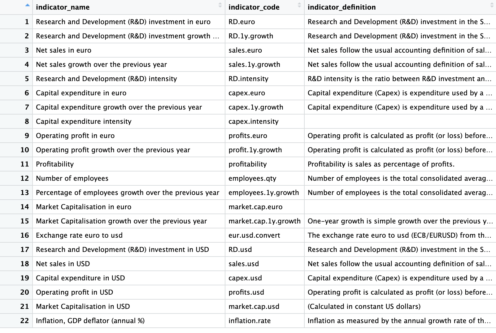
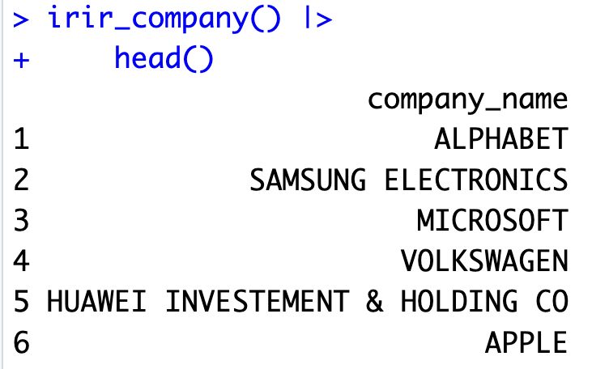

install.packages("remotes")
remotes::install_github("warint/iriR") # iriRのインストール
# iriRのロード
library(iriR)3 ミクロ・データ
ミクロレベルのデータベースとして本資料で取り上げるのは以下の3つのデータベースです。
European Commission’s Industrial R&D Investment Scoreboard: iriR
General Social Survey: gasser
European Social Survey: essurvey
Pew Research: pewmethods
１のデータベースを除き，2~3のデータはサーベイデータです。
3.1 European Commission’s Industrial R&D Investment Scoreboard - iriR
RパッケージiriRによって、欧州委員会の産業R&D投資スコアボード（European Commission’s Industrial R&D Investment Scoreboard: IRI）に簡単にアクセスすることができます。IRIスコアボードは、イノベーションに関する企業レベルのデータをまとめたものです。毎年、世界の上位1,000社が実施した研究開発投資が掲載されています。
このプロジェクトは、欧州委員会の共同研究センター（JRC）の7つの科学機関のうちの1つである成長とイノベーションの部門（Directorate B of Growth and Innovation）で実施されています。
iriRは、そうしたIRIスコアボードのデータへのアクセスを容易にし、毎年のスコアボードを時系列でまとめ、クロスセクション・時系列データセットを提供しています。これによってトップ1,000の革新的企業の一部、あるいは過去に革新的企業であった世界中の7,500以上の革新的企業のデータ－国、年、企業名、産業、指標、企業のランク）にアクセスすることができます。
指標の定義については、EU ScoreBordの報告書The 2022 EU INDUSTRIAL R&D INVESTMENT SCOREBOARDを参照してください。
3.1.1 iriRのインストール
iriRは現在開発版のみ利用可能のようですので開発者のGithubサイトから最新版をインストールします。
これでiriRが利用可能となります。
3.1.2 iriRの利用方法
IRIスコアボードの提供するデータを取得するするために５つの手順を踏みます：
ステップ1 各国のisoコードを取得する
ステップ2 指標コードを取得する
ステップ3 企業名を取得する
ステップ4 産業名を取得する
ステップ5 データを取得する
ステップ1 各国のisoコードを取得する
iso国別コードじたいはgoogle等で検索してもすぐに見つけることができますが、iriRパッケージでも提供されています。
# すべての国の名前と3桁のisoコードの出力
irir_country()
# 特定の国－この例では日本Japan－のisoコードの出力
irir_country(country = "Japan") # The ISO code for Canada will be producedステップ2 指標コードを取得する
特定のデータを取得するためには、事前にその指標のコードを知っておく必要があります。このためにirir_indicator()関数を利用します。
# すべての指標のリストを出力する
irir_indicator() irir_indicator( )の出力結果はdata.frameですので、出力結果をView( )に渡し、すべての指標を見てみましょう。
irir_indicator() |>
View()これによって以下のような22行×３列のデータフレームが表示されます。すなわち22の変数が収録されていることが理解されます。変数列をみると、indicator_name, indicatro_codeおよびindicator_definitionを確認することができます。それぞれの指標の内容はindicator_nameとindicator_definitionによって理解することができます。たとえば、5行目には”Research and Development(R&D) intensity”の指標を見つけることができます。

2列目のindicator_codeが特定のデータを取得する際に利用される指標コードになります。また、irir_indicator()関数は特定の検索語を指定して指標を探すこともできます。
# 指標名に"capital"を含んだすべての指標のリストを表示する
irir_indicator(indicators = "capital") ステップ3 企業情報を取得する
特定の企業の活動を調べたいときには、irir_company( )関数によって取得することができます。
# データセットに含まれるすべての企業名を出力する
irir_company()
# 特定の"検索語（ただし企業名）"を含むすべての企業を出力する
irir_company(company = "toyota") 企業数は6,662社と膨大です。そこでhead( )関数を使って冒頭だけを表示してみましょう。
irir_company() |>
head()
これを実行すると、ALPHABET, SAMSUNG ELECTRONICS, MICROSOFTといった企業名が表示されます。なお、irir_company()の引数に企業名を指定することによって特定の企業を探すこともできます。
irir_company(company = "toyota")ステップ4 産業名を取得する
irir_industry()関数で産業名を取得できます。結果をここでもView()関数に渡しています。主力結果をみると、産業は81産業が収録されています。
# 産業名を取得し、結果をView()に渡し、結果を表示
irir_industry() |> View()ステップ5 データを取得する
以上のステップで国コード、指標コード、企業名、産業名を取得する方法を理解できたと思います。最後に、こうした情報を使ってデータを取得してみましょう。データの取得のためにはirir_data( )関数を使います。この関数は以下のように６つの引数をとります。引数が指定されない場合はすべてのデータが表示されます。
irir_data(
country = iri_country,
years = iri_year,
indicators = iri_indicator,
company = iri_company,
industry = iri_industry,
ranks = iri_rank
)country = ” ” : 国のisoコードを” “に指定します。
year = ” ” : 取得したい年を” “に指定します。
indicators = ” ” : ステップ2で取得した指標コードを指定します。
company = ” ” : 企業名を” “に入力し、指定します。
industry = ” ” : 産業名を指定します。
ranks = ” ” : ランクを指定します。
最初に、引数を何も指定せずにirir_data()を実行してみましょう。これによってデータセット全体が取得できます。データが膨大ですので、head()関数を使って最初の６行だけを表示します。
irir_data() |>
head()出力したすべてのデータを、オブジェクトに保存しておくと、のちの分析に便利かもしれません。たとえばdata_iriという名前をつけたオブジェクトに保存しておくとします。
data_iri <- irir_data()これを実行すると、IRIのデータを格納したdata_iriというオブジェクトが生み出されます。[Environment]ウィンドウをみると、8変数の801,438の観察値が確認できます。
次に、引数を指定し、データを取得してみましょう。
# 韓国企業"サムスン"の2020年の包括的なIRIデータを取得
# 指標コード "RD. euro"
irir_data(country = "samsung", years = "2020", indicators = "RD.euro", company = "samsung")
# 2018年のアメリカとフランスの全産業の企業データを取得
irir_data(country=c("JPN"), years="2018",)
irir_data(years = "2018") # It generates a data frame of all the companies data for from all the industries for all the countries in 2018.3.2. 3 可視化 - irir_visual
関数irir_visual( )によって、IRIにおけるイノベーションデータに関して３つのタイプのグラフを描くことができます。
デフォルトではトップ5カ国とカナダのグラフが描かれます。引数を指定することによってグラフを変更することができます。引数chart = ” “部分に”bar_1”と異なったグラフを指定することによってデフォルトのグラフと異なったグラフを描くことができます。
irir_visual(chart = "bar_1")bar_1: 代表的な国についてR&Dのリーディング企業数の棒グラフを描く
bar_2: 代表的な国について10億USドル（対GDP）におけるR&Dリーディング企業数の棒グラフを描く
bar_3: 代表的な国についてリーディング企業のR&D支出の棒グラフを描く
line_1
line_2
line_3
line_4
line_5
line_6
point_1